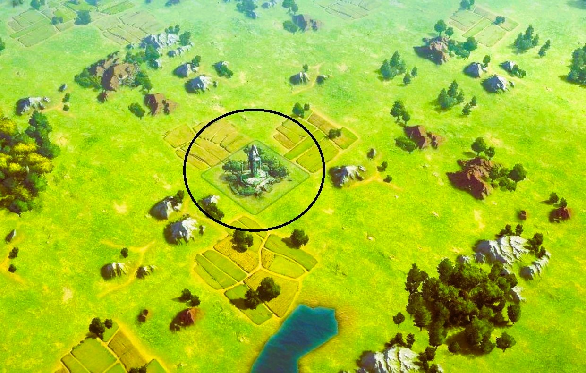
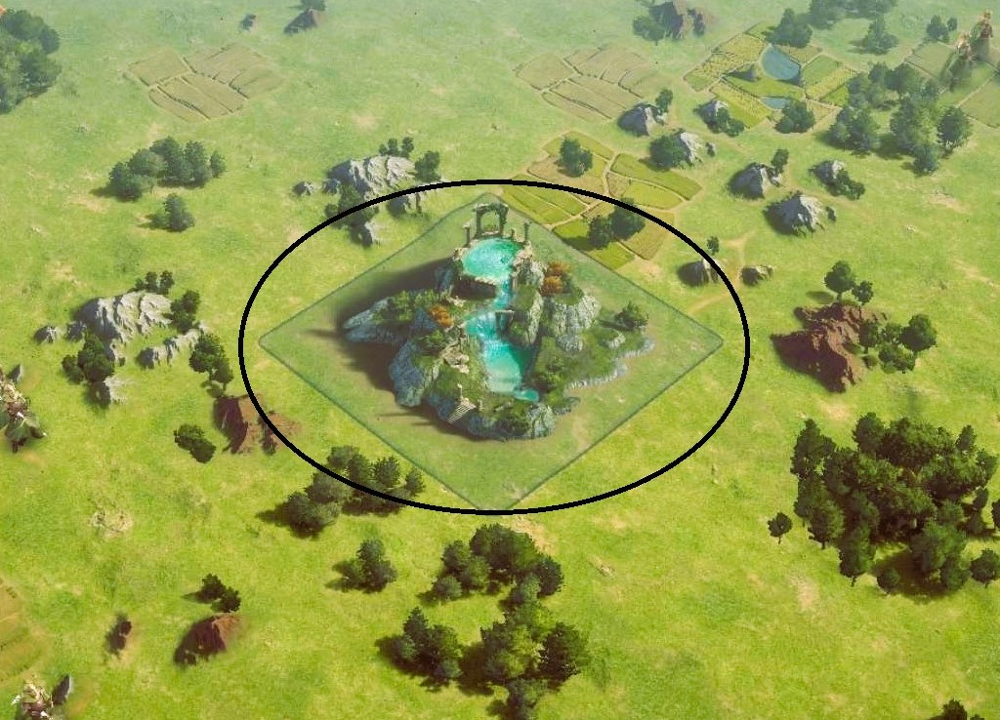

Strange Effigies and Mysterious Sources
How to recognize a strange effigy
This statue made from stone is called "Strange Effigy".The strange effigies are easily visible and accessible to all. There are multitudes of them placed at different places on the map.
Characteristics of a strange effigy

As indicated in the red frame, the tile belonging to the strange effigy is protected by 2 level 35 commanders.As well as a resistance of 250,000 hardness.
How to capture
Just send commanders who can beat both level defenders 35. Then use another commander with siege capable of doing the 250,000 damage (250k damage).
The bonus offered by this conquest
Once the 2 defenders have been destroyed and the siege damage has been inflicted, the Strange tile Effigy is in your possession. When she is conquered, it gives you a bonus of 500 production. In addition, each member of your community and yourself will benefit from a reward of 1000 gold coins provided the strange effigy is conquered for the first time.
How to recognize a mysterious source
This pile of stone surmounted by a waterfall possessing a feeling of benevolence is called "Mysterious Source".The Mysterious Sources are easily visible and accessible to all. There are multitudes of them placed at different places on the map.
Characteristics of a mysterious source

As indicated in the red frame, the space belonging to the mysterious source is protected by 2 level 40 commanders.As well as a resistance of 500,000 hardness.
How to capture
Just send in commanders who can easily beat the two level 40 defenders. Then use other commanders with a siege that can do 500,000 damage (500k of damage).
The bonus offered by this conquest
Once the 2 defenders have been destroyed and the siege damage has been dealt, the "Source Mysterious" is in your possession. When conquered, she gives you a bonus of 250 production for you and your community. That is to say that each of the members belonging to your community will have an increase of 250 production for free thanks to your conquest. In addition, each member of your common and you yourself will enjoy a reward of 1500 gold coins provided that the mysterious source is conquered for the first time.